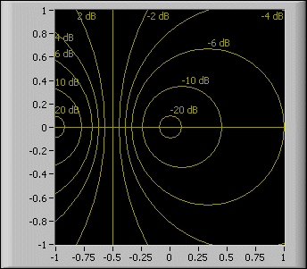
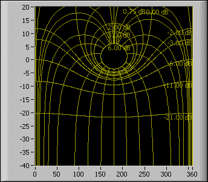
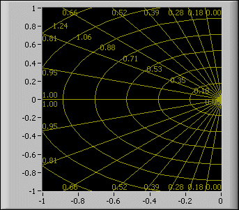

Note Selecting a plane from the Optional Plane submenu does not automatically scale the graph to display the plane. Certain values lie outside the visible range of these planes. The following steps contain values you can use to view the planes.
Displaying a Nyquist Plane
Complete the following steps to display a Nyquist plane.
Add an XY graph to the front panel.
Add Find
Double-click the minimum and maximum values on the x- and y- scale and change both minimum values to –1 and both maximum values to 1.
Right-click the XY graph and select Optional Plane»Nyquist from the shortcut menu.
(Optional) To view the Nyquist plane without labels, right-click the XY graph and remove the checkmark from the Optional Plane»Show Nyquist Labels shortcut menu item.
(Optional) To view the Nyquist plane without the Cartesian lines, right-click the XY graph and remove the checkmark from the Optional Plane»Show Cartesian Lines shortcut menu item.
To remove the Nyquist plane, right-click the XY graph and select Optional Plane»None from the shortcut menu.
The following front panel shows a Nyquist plane without the Cartesian lines.

Displaying a Nichols Plane
Complete the following steps to display a Nichols plane.
Add an XY graph to the front panel.
Add Find
Double-click the minimum and maximum values on the x-scale and change the minimum value to 0 and the maximum value to 360.
Double-click the minimum and maximum values on the y-scale and change the minimum value to –40 and the maximum value to 20.
Right-click the XY graph and select Optional Plane»Nichols from the shortcut menu.
(Optional) To view the Nichols plane without labels, right-click the XY graph and remove the checkmark from the Optional Plane»Show Nichols Labels shortcut menu item.
(Optional) To view the Nichols plane without the Cartesian lines, right-click the XY graph and remove the checkmark from the Optional Plane»Show Cartesian Lines shortcut menu item.
To remove the Nichols plane, right-click the XY graph and select Optional Plane»None from the shortcut menu.
The following front panel shows a Nichols plane without the Cartesian lines.

Displaying an S Plane
Complete the following steps to display an S plane.
Add an XY graph to the front panel.
Add Find
Double-click the minimum and maximum values on the x-scale and change the minimum value to –1 and the maximum value to 0.
Double-click the minimum and maximum values on the y-scale and change the minimum value to –1 and the maximum value to 1.
Right-click the XY graph and select Optional Plane»S Plane from the shortcut menu.
(Optional) To view the S plane without labels, right-click the XY graph and remove the checkmark from the Optional Plane»Show S Plane Labels shortcut menu item.
(Optional) To view the S plane without the Cartesian lines, right-click the XY graph and remove the checkmark from the Optional Plane»Show Cartesian Lines shortcut menu item.
To remove the S plane, right-click the XY graph and select Optional Plane»None from the shortcut menu.
The following front panel shows an S plane without the Cartesian lines.

Displaying a Z Plane
Complete the following steps to display a Z plane.
Add an XY graph to the front panel.
Add Find
Double-click the minimum and maximum values on the x- and y- scale and change both minimum values to –1 and both maximum values to 1.
Right-click the XY graph and select Optional Plane»Z Plane from the shortcut menu.
(Optional) To view the Z plane without labels, right-click the XY graph and remove the checkmark from the Optional Plane»Show Z Plane Labels shortcut menu item.
(Optional) To view the Z plane without the Cartesian lines, right-click the XY graph and remove the checkmark from the Optional Plane»Show Cartesian Lines shortcut menu item.
To remove the Z plane, right-click the XY graph and select Optional Plane»None from the shortcut menu.
The following front panel shows a Z plane without the Cartesian lines.

 Add
Add  Find
Find